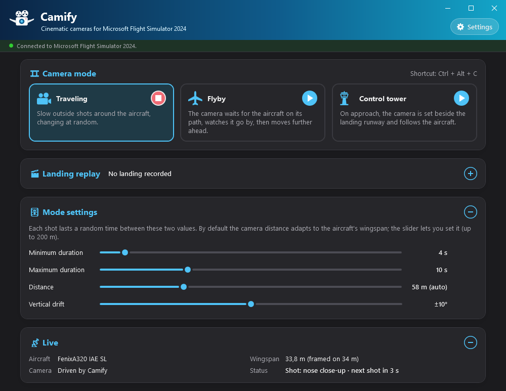
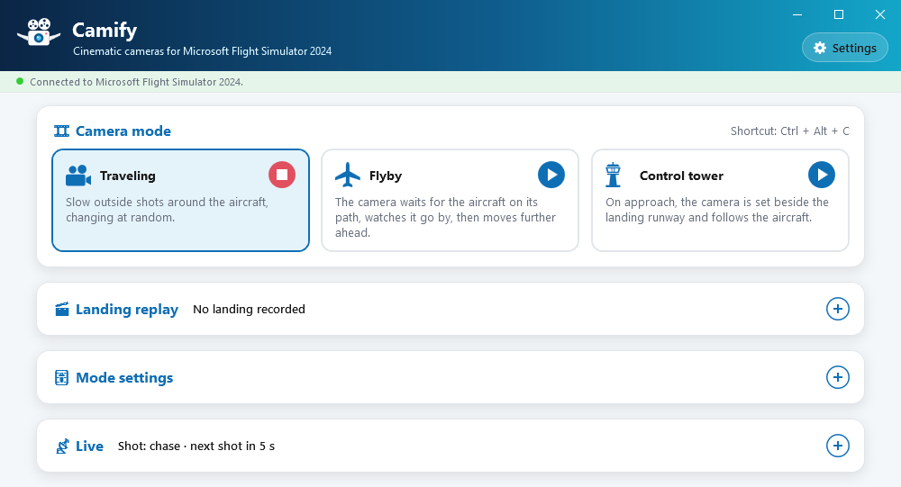
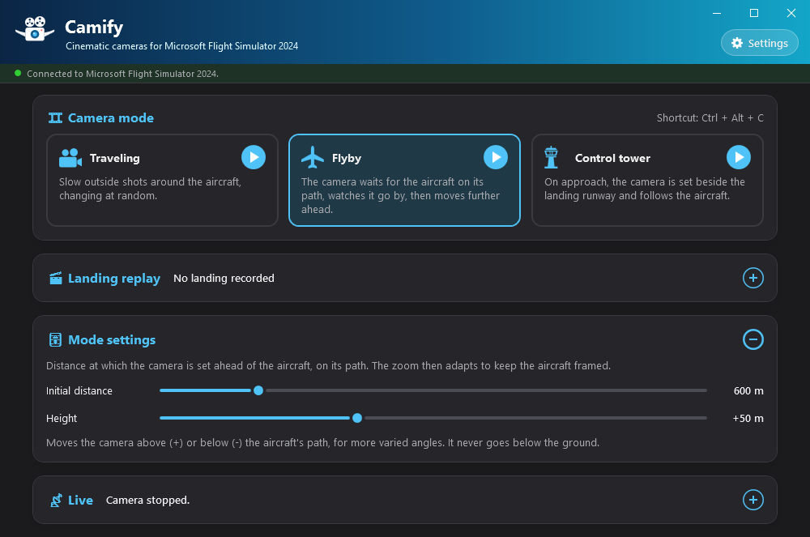
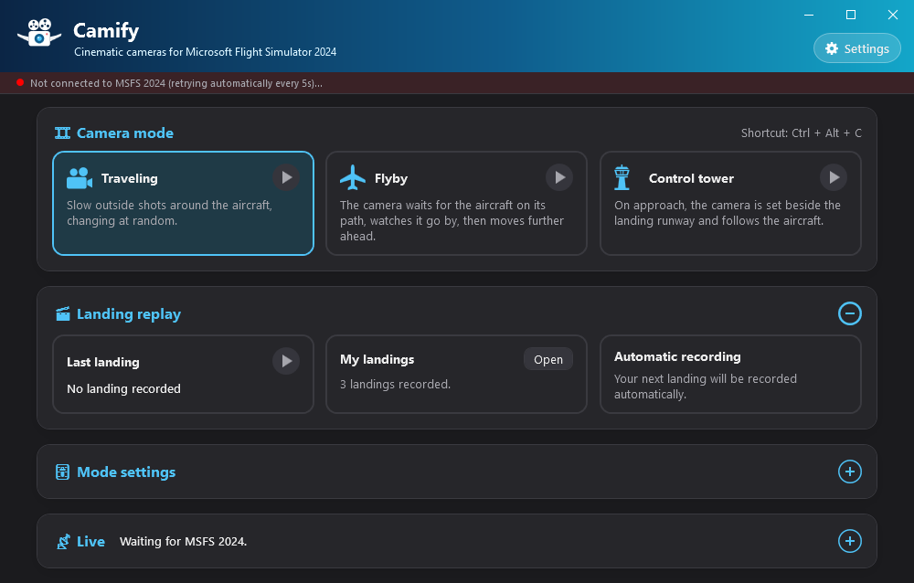
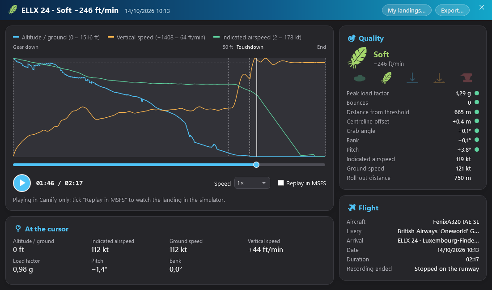
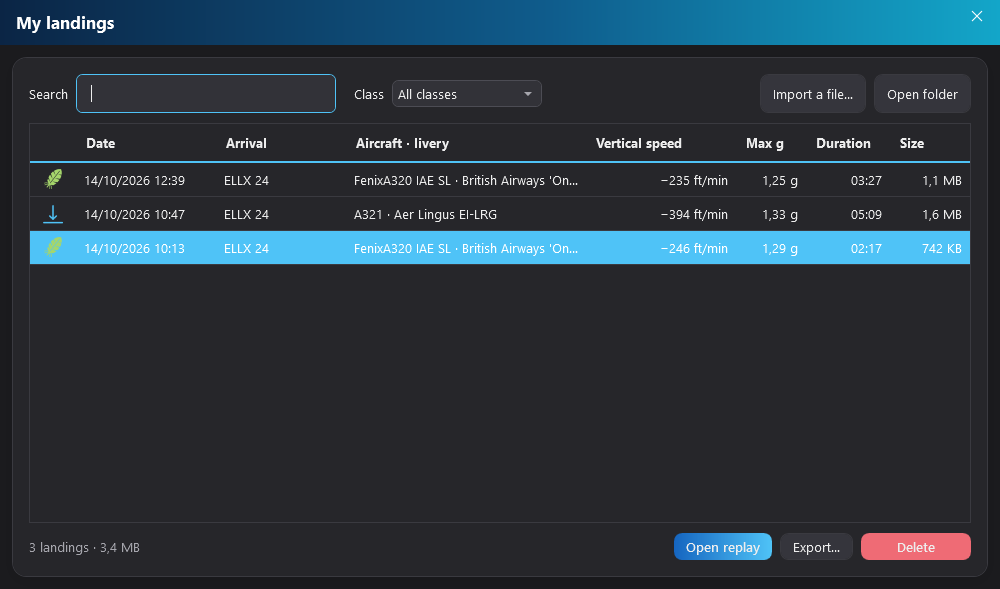
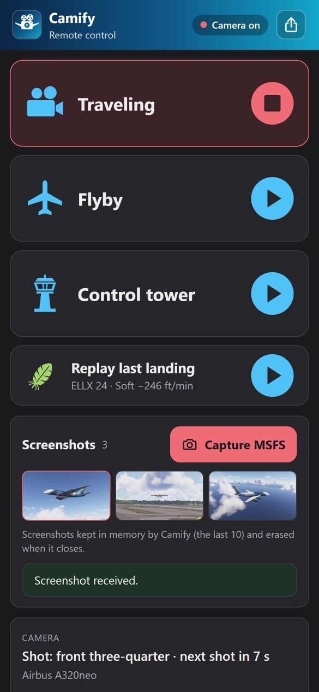
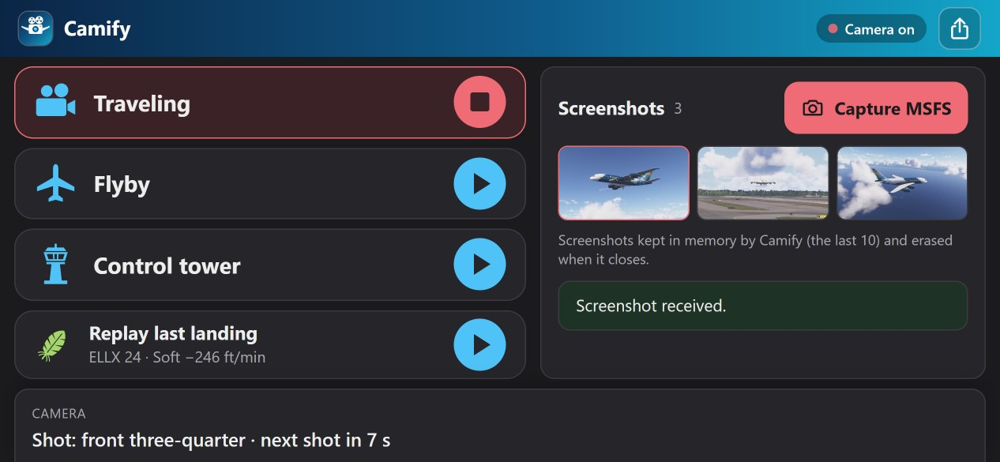
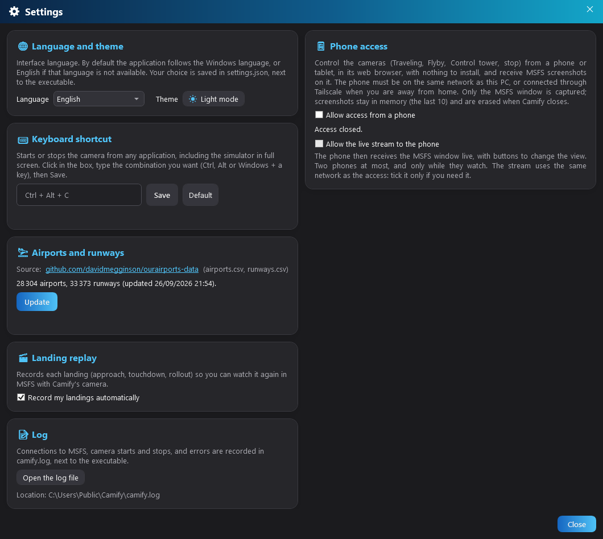

🎥 1. Overview
What Camify does, and who it is for.
Camify is a standalone Windows application that drives the Microsoft Flight Simulator 2024 camera to film your aircraft like a movie, while you fly or while the autopilot flies for you. It uses the SimConnect camera API, the simulator's official interface: there is no mod to install in MSFS.
Three camera modes, each started with a click or a keyboard shortcut:
- Traveling: slow outside shots around the aircraft, picked at random (front three-quarter, side, high angle, views from below and above, chase…);
- Flyby: the camera waits for the aircraft on its path, watches it go by, then moves further ahead;
- Control tower: on approach, the camera is set beside the landing runway and follows your landing.
Camify also records each of your landings: it rates them (vertical speed at touchdown, load factor, centreline, threshold…) and lets you watch them again in MSFS, filmed by its cameras: see Landing replay.
The modes can also be started from a phone or tablet, which also receives screenshots of the simulator: see Phone access.
Camify never flies your aircraft in flight (only the replay in MSFS moves it, on the ground, when you ask) and does not record video: it positions the simulator's camera. To keep a record, use your usual capture tool (for example the Windows Xbox Game Bar, Win + Alt + R).
🚀 2. Installation and first launch
A single file to download, nothing to install.
- Download
Camify.exefrom the releases page: github.com/kairhosen/Camify-releases. - Put it in a folder of your own (for example
Documents\Camify): the application writes its files next to the executable. - Start it, before or after MSFS 2024: it connects by itself.
Camify requires Windows 10 version 2004 or later (Windows 11 recommended). The executable weighs 87 MB: it contains everything it needs, with no .NET or other component to install. To move to a new version, simply replace the old executable: your settings are kept.
On the very first start, Camify automatically downloads the airport and runway reference data (OurAirports), needed by the Control tower mode. An Internet connection is only needed at that moment; the data can then be updated on demand from the Settings.
camify.db (airports and runways),
camify.log (log),
settings.json (language, selected mode, slider values, shortcut,
phone access and its code), theme.txt (light or dark theme) and the
replays folder (your landings). If you move the executable,
copy them along to keep your settings.
🖥️ 3. General interface
A single window: the banner, the connection indicator and the camera.
- A banner at the top that doubles as the title bar: drag it to move the window, double-click it to maximize or restore. The minimize, maximize and close buttons sit at the top right; on Windows 11, hovering over the maximize button opens the Windows snap layouts menu to put the window on half or a quarter of the screen, next to the simulator for instance;
- Below these buttons, ⚙ Settings opens the settings window: language, light or dark theme, keyboard shortcut, airports and log;
- A status bar with a coloured dot (red = not connected, green = connected). While MSFS is not available, Camify retries the connection every 5 seconds, with nothing for you to do;
- Below, the camera: the three modes, the landing replay, the mode settings and the live status.
The application is shown in the Windows language when available (English, French or Spanish), and in English otherwise. You can change it in the Settings.
The window height adjusts by itself to what is displayed (panel expanded or collapsed, selected mode, language): the window stays as compact as possible. You can still resize it by its edges.


🎞️ 4. Camera
Choose a mode, adjust it, start it — and follow what the camera does.
Starting and stopping
The window shows three mode cards: Traveling, Flyby and Control tower.
- Clicking a card selects it and shows its settings in the 🎚️ Mode settings panel, without starting the camera;
- Each card's round ▶ button starts that mode. It turns into ■ while the mode runs: a click stops it, hands the camera back to the simulator and returns to the view you had before (cockpit, external, drone…);
- Only one mode plays at a time: starting a mode stops the current one;
- The global keyboard shortcut (Ctrl + Alt + C by default), shown to the right of the 🎞️ Camera mode title, stops the running mode or starts the selected one — from MSFS, even in full screen.
Slider changes apply immediately, even while the camera is running, and are kept for the next session.
Traveling mode
Camify chains outside shots picked at random. During each shot the camera glides gently (slight circular tracking, rising or sinking, moving closer or away, zoom), with progressive acceleration and deceleration; moving to the next shot is a cut. Two consecutive shots are never of the same kind.
| Shot | Viewpoint |
|---|---|
| Front three-quarter | Ahead of the aircraft, to the side, slightly above |
| Side | To the side, level with the aircraft |
| Rear three-quarter | Behind, to the side, a little above |
| High angle | Above the aircraft |
| Low angle | To the side, below the aircraft (in flight only) |
| View from below | Almost straight below the aircraft (in flight only) |
| View from above | Almost straight above the aircraft |
| Nose close-up | Very close to the nose |
| Chase | Behind the aircraft, in its wake |
Settings
- Minimum duration and Maximum duration (2 to 30 s, 4 and 10 s by default): each shot lasts a random time between these two values. The two sliders stay consistent (the minimum never exceeds the maximum).
- Distance: average camera distance. By default it follows the aircraft's wingspan (an A380 is filmed from much further away than a C172) and the slider shows “(auto)”. Move it to set a value (5 to 200 m); the Auto button goes back to the automatic value. This manual choice lasts for the session and returns to automatic when you change aircraft.
- Vertical drift (0 to 20°, 10° by default): during each shot the camera rises or sinks by this angle, the direction being picked at random. At 0° the height stays constant during the shot; at 20° the vertical movement is clearly visible.
Flyby mode
The camera is set, fixed, far ahead of the aircraft on its predicted path (track, ground speed and vertical speed), slightly offset to the side. It follows the aircraft with a zoom matched to the distance, watches it go by and fly away, then is set again further ahead: usually on the other side of the path, at a slightly different distance and offset on each pass.
If the aircraft turns back or turns far away from the camera, the camera is set ahead of it again. With the aircraft parked, it stands beside it at eye level.
Settings
- Initial distance (100 to 3,000 m, 600 m by default): distance at which the camera is set ahead of the aircraft, within 10 % to vary the passes. The zoom then adapts to keep the aircraft framed.
- Height (−200 to +500 m, 0 by default): moves the camera above (+) or below (−) the path, for more varied angles. A small random variation is added each time the camera is placed.

Control tower mode
Start this mode at any time, for example at the top of descent. Until the aircraft is on approach, the simulator view is kept. As soon as the aircraft is below 3,000 ft above ground and aligned with a runway, Camify:
- looks for the nearest airport (20 km radius) and the landing runway;
- sets the camera once beside the runway, level with the touchdown zone, at building height (12 m);
- follows the aircraft, zoom included, without ever moving the camera until it stops.
This mode has no settings. It needs the airport and runway data: if it is empty, a red warning appears in the 🎚️ Mode settings panel, below the description.
Live panel
The 📡 Live panel is updated four times per second. Collapsed, it shows the camera status to the right of its title (current shot, distance, runway…); expanded (+ button), it details:
| Line | Content |
|---|---|
| Aircraft | Name of the aircraft loaded in the simulator |
| Wingspan | Wingspan declared by the aircraft, and the size used for framing (bounded when the wingspan is unknown or abnormal, for example for a helicopter) |
| Camera | “Simulator view”, “Driven by Camify”, “Taken by another application” or “Disabled in the simulator options” |
| Status | What the mode is doing: current shot and countdown (Traveling), camera distance (Flyby), airport, runway and distance from the centreline (Tower), or the reason for a stop |
Automatic stops
You always stay in control: Camify stops and hands the camera back to the simulator in the following cases, with the reason shown in the status.
- You change the view in MSFS (view key, joystick, camera menu…): Camify detects it, stops at once and keeps the view you just chose;
- the connection to MSFS is lost;
- the camera is already used by another application;
- add-on cameras are disabled in the simulator options;
- an error occurs (details in the Log).
When Camify is closed, the camera is also handed back to the simulator, which returns to the previous view.
🎬 5. Landing replay
Every landing recorded, rated, and replayed in MSFS under Camify's cameras.
The 🎬 Landing replay panel, below the camera modes, is collapsed at startup like the others (+ button). Collapsed, it shows the last landing or the recording in progress to the right of its title. Expanded, it holds three cards:
- Last landing: the runway, aircraft, time and rating of the session's last landing; its round ▶ button replays it at once (replay window and, when possible, in MSFS);
- My landings: the number of landings saved on disk; Open shows the list;
- Automatic recording: the recording status, with a red dot and “Recording” during the approach.

Automatic recording
Nothing to start: as soon as the gear is down on descent (below 5,000 ft above ground), Camify records the approach, touchdown and rollout, then stops when you leave the runway, come to a full stop or slow to taxi speed. A go-around (gear up or climbing back before touchdown) discards the recording; a touch-and-go is recorded, then Camify gets ready for the next landing.
Recording only reads the simulator: it touches neither your aircraft nor the camera, and works even when no camera mode is running. It can be turned off in the Settings (Record my landings automatically, ticked by default).
replays folder, next to the
executable, in its own .camify-replay file (a few hundred KB to a
few MB), named after the date, airport, runway and aircraft. Nothing is ever deleted
automatically: a damaged file never takes the others with it.
Replay window
The last landing's ▶ button, or Open replay in My landings, opens the replay window. Its banner shows the runway, rating and date; My landings… and Export… sit on the right.

- The chart plots the height above ground (wheel height, 0 once down), the vertical speed and the indicated airspeed. Above it, clickable marks: gear down, 50 ft, touchdown, any bounces, end.
- Click or drag on the chart or on the bar below it to move the cursor. The round button plays or pauses; Speed goes from ×0.25 to ×2.
- 📍 At the cursor gives the values at the displayed moment: height above ground, speeds, load factor, pitch, bank.
- ✈️ Flight shows the aircraft, livery, arrival, date, duration and what ended the recording.
Playback in the window always works, even without MSFS.
Landing quality
The main rating follows the vertical speed at touchdown, with the same thresholds for every aircraft (and the same as Flight Logbook). Its five-sector gauge icon also appears on the card, in the list and on the phone.
| Class | Vertical speed at touchdown |
|---|---|
| Very soft | under 100 ft/min |
| Soft | 100 to 250 ft/min |
| Normal | 250 to 500 ft/min |
| Firm | 500 to 700 ft/min |
| Very firm | 700 ft/min and over |
Each criterion then gets a green, orange or red dot:
| Criterion | Green | Orange |
|---|---|---|
| Max load factor | under 1.4 g | 1.4 to 1.75 g |
| Bounces | none | one |
| Distance from threshold | 150 to 900 m | 0 to 150 m or 900 to 1,200 m |
| Centreline offset | under 3 m | under a quarter of the width |
| Crab | under 5° | under 10° |
| Bank | under 3° | under 6° |
| Pitch | 0 to 8° | negative or 8 to 10° |
Beyond that, the dot is red. Speeds at touchdown and the rollout distance are given for information. The threshold and centreline come from the MSFS scenery runways (OurAirports as a fallback); with no known runway, or when its position is estimated, these two criteria are not rated.
Replay in MSFS
With Replay in MSFS ticked, the replay also takes place in the simulator: your own aircraft, frozen, is moved to the runway and flies exactly your approach and landing again, sitting on the MSFS ground to the centimetre, filmed by the camera mode selected in the main window (Traveling, Flyby or Control tower). The cursor, pause and speed drive it just like the window. The box is unticked when the window is opened from the PC; the phone always ticks it.
- Your aircraft must be stopped on the ground, the simulator not paused, and the landing less than 200 km away; otherwise the window plays on its own and says why.
- At the start, MSFS loads the scene for a few seconds. The gear is down throughout the replay. When the film ends, the aircraft stays on the last frame until you stop.
- If you change view in MSFS (cockpit, external view…), Camify releases the camera and the replay goes on, seen from the chosen view; a mode button takes the camera again.
- When you stop the replay or close the window, your aircraft is put back where it was, unfrozen, and the previous view comes back. If you move the aircraft or change aircraft, the replay stops and the aircraft is only unfrozen, where it is.
- With an aircraft other than the recorded one, the replay uses yours (Camify says so). During a replay, no new landing is recorded.
- If Camify closes abruptly during a replay, a banner at the next launch offers to Put back your aircraft or to Ignore. Nothing moves without your click.
My landings

- Search filters by airport, runway, aircraft or livery; Class keeps a single hardness class.
- Open replay (or a double-click) opens the selected landing in the replay window.
- Export… copies its file wherever you like, for instance to send it to a friend; Import a file… adds a landing you received, after checking it.
- Delete asks for confirmation (press again) and sends the file to the Windows Recycle Bin.
- Open folder shows the
replaysfolder in File Explorer.
The bottom of the window gives the number of landings and the space they take. An unreadable file stays greyed out in the list, without affecting the others.
📱 6. Phone access
The phone as a remote control for the cameras, MSFS screenshots and live view in your pocket.
From a phone or a tablet (iPhone, Android…), in its web browser and with nothing to install, you can:
- start and stop the Traveling, Flyby and Control tower modes, with large buttons designed to be tapped without looking, like a Stream Deck;
- follow the camera status (current shot, distance, runway…) and the loaded aircraft;
- replay the last landing in MSFS;
- capture the MSFS window and get the images on the phone, to keep them in Photos;
- watch MSFS live (live stream) and change the view.
Access is disabled by default. The phone must be on the same network as the PC (the same Wi-Fi), or connected through Tailscale when away from home.


Enabling and pairing
In the Settings window, 📱 Phone access panel:
- Tick Allow access from a phone. The first time, Windows may ask to allow Camify through its firewall: accept for private networks only.
- Choose the PC address (local network, or Tailscale for access away from home), then click Show QR code.
- Scan the QR code with the phone's camera: the page opens directly in the browser.
Controlling the cameras
- Tap a mode to start it: its button turns red with a ■ square. Tap it again to stop it. Starting another mode stops the current one, as in Camify.
- At the bottom of the screen, the Camera panel shows the live status (current shot and countdown, camera distance, runway…) and the aircraft. Replies to commands (for example “MSFS is not connected”) appear there too.
- The badge in the banner shows the link: Connected, Camera on, MSFS not connected or PC unreachable (retried automatically).
- The page follows the orientation: in landscape, the modes move to the left and the screenshots to the right.
Below the modes, Replay last landing shows the icon and rating of the session's last landing. Tapping it replays the landing in MSFS, with the camera mode chosen on the PC, and opens the replay window on the PC; as on the PC, your aircraft must be stopped on the ground and the simulator not paused. Tap again to stop: your aircraft is put back where it was.
The phone cannot change anything else: not the mode settings, the shortcut or the configuration.
MSFS screenshots
- Capture MSFS, at the top right of the Screenshots panel, takes an image of the simulator window (up to 1920 px wide); the result (“Screenshot received.” or the reason for a failure) appears at the bottom of the panel. At most one screenshot every two seconds.
- The last 10 screenshots are shown as thumbnails; the newest has a red border until you open it.
- Tap a thumbnail to open it full screen, and move to the previous or next one with the arrows. To keep it: long-press the image, then “Save to Photos” (iPhone) or “Download image” (Android), or use the Save button.
Live stream
The phone can also show the MSFS window live, as video without sound (up to 720p, 60 frames per second), and change the view without touching the PC.
- In the Settings window, 📱 Phone access card, tick Allow the live stream to the phone (unticked by default; phone access must be enabled).
- On the phone, tap Live stream, under the replay: the video opens full screen and starts within a second or two.
- Cockpit and External change the simulator view. If a Camify mode is playing, it stops first. Changing the view is refused during a replay.
- The Traveling, Flyby, Control tower and Stop buttons control the modes without leaving the video.
- After four seconds without touching the screen, the buttons fade out (only the close button stays, dimmed): tap the video to bring them back. The full screen button hides the rest of the page; on iPhone it is the native full screen, without the view buttons.
- If the picture falls behind, the page plays slightly faster or jumps back to live. In the background or with the screen locked, the stream pauses and resumes when you return.
- On the PC, a banner shows One phone is watching the live stream.; Stop live stream stops it for every phone.
Security
- The QR code contains a secret code specific to your PC: without it, the phone receives nothing and can control nothing. Don't share it; it hides itself after three minutes.
- The short code shown under the QR code works only once, only while the QR code is shown, and is cancelled after ten wrong attempts.
- If in doubt, Change the code immediately disconnects all phones and erases their screenshots: they will have to scan the new QR code.
- Only devices on your local network or your Tailscale network can connect, up to four at a time; connections from the Internet are refused.
- The phone only sends a closed list of commands (start a mode, stop, replay the last landing, capture, show a screenshot, start or leave the live stream, pick the cockpit or external view): it can neither change a setting, read a file on the PC nor browse your landings.
- Only the MSFS window is captured, never the rest of the screen. Screenshots stay in memory in Camify, are never written to disk, and are erased when it closes, when you untick access or when you change the code.
- The live stream has its own checkbox, unticked by default. The video only shows the MSFS window, travels only over the authenticated connection, is never recorded and stops as soon as no phone is watching.
The setting and the code are saved in settings.json, next to
the executable.
⚙️ 7. Settings and log
Language, theme, keyboard shortcut, phone access, landing recording, airport data and log.

The ⚙ Settings button in the banner opens this window on top of the main window. Every change is applied and saved at once: there is nothing to confirm, Close (or Esc) simply takes you back to the camera.
🌐 Language and theme
English, French or Spanish. By default the application follows the Windows language.
The choice is saved in settings.json.
Next to it, Light mode / Dark mode
switches the whole application theme. On first launch Camify follows the Windows theme;
your choice is then kept in theme.txt.
⌨️ Keyboard shortcut
The shortcut starts or stops the camera from any application, including the simulator in full screen:
- click in the input box;
- type the combination: Ctrl, Alt or Win (optionally with Shift) plus a letter, a digit, an F1–F24 key or a navigation key;
- click Save. Default goes back to Ctrl + Alt + C.
If the combination is already taken by another application, Camify says so and the shortcut reminder shows “(unavailable)”: choose another one.
📱 Phone access
Enables the phone page, chooses the PC address, shows the QR code and changes the secret code, and allows the live stream (separate checkbox, unticked by default); the status line shows the listening port (8742) and the number of connected phones. Everything is detailed in Phone access.
🎬 Landing replay
Record my landings automatically (ticked by default): unticked, Camify records nothing more; landings already saved stay in My landings.
🛬 Airports and runways
Shows the number of airports and runways in the database and the update date. The
Update button downloads OurAirports'
airports.csv and runways.csv again. Only
large, medium and small airports with at least one usable runway are kept. You can close
the window during the update: it carries on.
📝 Log
The technical history, to diagnose a problem: connections to MSFS, camera starts and
stops and errors are recorded in camify.log, next to the
executable, whose location is shown below the button.
Open the log file opens it in Notepad, to read it or attach
it to a bug report.
Beyond 5 MB, the log is renamed camify.old.log (replacing the
previous one) and a new file starts.
💡 8. Tips & good practice
- With the autopilot, Traveling turns into a real cruise film: lengthen the shots (15 to 30 s) for a more contemplative result.
- For a spectacular flyby, reduce the initial distance (200 to 400 m) and play with the height: slightly below for a pass seen from underneath, well above to see the aircraft with the landscape.
- For the tower, start the mode at the top of descent: it waits for the approach by itself, you just fly.
- To take back control, simply change the view in MSFS or use the keyboard shortcut.
- On a single screen, with the simulator windowed, snap Camify to a corner with the Windows 11 snap layouts and leave its panels collapsed: the camera status stays readable to the right of the 📡 Live title.
- The phone as a remote: placed next to the keyboard or the throttle, it starts the modes with a tap without taking your eyes off MSFS, and keeps the best images of the flight with Capture MSFS.
- To improve your landings, compare your replays in My landings: the vertical speed at touchdown tells how soft, the threshold and centreline how precise.
- With Flight Logbook, both applications can run during the same flight: one logs the flight, the other films it.
Application files
🛠️ 9. Troubleshooting
“Not connected to MSFS 2024” never turns green
Check that Microsoft Flight Simulator 2024 is running and that a flight is loaded. The log details the connection attempts. Reconnection is automatic every 5 seconds.
“SimConnect.dll is missing or altered”
Camify embeds the SimConnect client and checks its fingerprint before loading it. This
message means a damaged or modified executable: download Camify.exe
again from the official releases page.
The camera is “Disabled in the simulator options”
Cameras driven by add-ons are disabled in the MSFS 2024 options: enable them again in the simulator's camera options, then restart the mode.
The camera stops as soon as I touch the joystick
This is intended if the action changes the view in MSFS (view hat, camera button…): Camify then hands control back. Remove that binding in the simulator controls, or restart the mode with the shortcut.
Control tower mode stays “waiting”
The aircraft must be below 3,000 ft above ground and aligned with a runway of a known airport within 20 km. Check that the reference data is not empty (Settings window) and update it if the airport is recent.
The keyboard shortcut does nothing
It may already be used by another application: the reminder next to the title then shows “(unavailable)”. Choose another combination in the Settings window.
No landing is recorded
Check that Record my landings automatically is ticked in the Settings. Recording starts when the gear comes down on descent: a landing begun before Camify was started, or followed by a go-around, is not recorded.
“Replay in MSFS” is refused
Stop your aircraft on the ground (zero speed), unpause the simulator, then start the replay again. The landing must be less than 200 km from your aircraft. If a banner asks whether to put your aircraft back, answer it first. The replay window gives the exact reason.
The phone shows “PC unreachable”
Check that Camify is open, that phone access is ticked and that the phone is on the same Wi-Fi as the PC (not a guest network, nor 4G/5G without Tailscale). If Windows asked for firewall permission, it must be granted for private networks, and the PC's network must be set to “private” in Windows.
The phone shows “Code refused”
The code was changed in Camify: scan the new QR code. From the home-screen icon of an iPhone, which cannot scan, show the QR code in Camify and type the short code shown under it.
The screenshot fails
MSFS 2024 must be running and its window must not be minimized. In exclusive full screen, switch the simulator to windowed full screen. The log gives the details of the error.
The live stream does not start or stops
Tick “Allow the live stream to the phone” in the Settings; two phones at most can watch. On iPhone, iOS 17.1 or later is required. If the PC has no hardware H.264 video encoder, the live stream is impossible. After a Wi-Fi drop of more than 30 seconds, start it again from the phone; the log gives the reason for a stop.
⚖️ Appendix — Data sources and licences
The third-party components and data used by the application, and their terms.
| Item | Use in the application | Licence / terms |
|---|---|---|
SimConnect.dll (Microsoft Flight Simulator 2024 SDK 1.7.3) |
Native x64 SimConnect client, embedded unmodified in Camify.exe
to communicate with the simulator |
© Microsoft Corporation, all rights reserved. Provided “as is”, without warranty,
and subject to the Microsoft Flight Simulator SDK license terms, attached to each release
as MSFS-SDK-EULA.pdf. Only used with a legally installed copy of
MSFS 2024. |
| OurAirports (ourairports-data) | Airports and runways (airports.csv, runways.csv)
for the Control tower mode, downloaded on first launch |
Public domain (repository under The Unlicense); provided with no guarantee of accuracy. |
Microsoft Flight Simulator 2024, SimConnect and Windows are trademarks of Microsoft Corporation. Camify is an independent application: it is not affiliated with, endorsed by or supported by Microsoft.